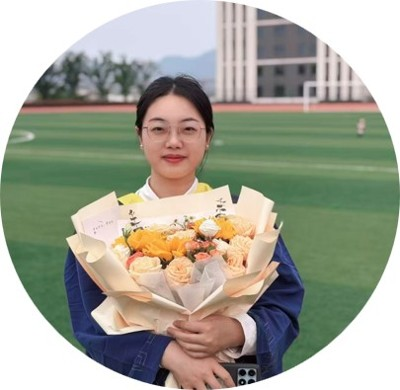
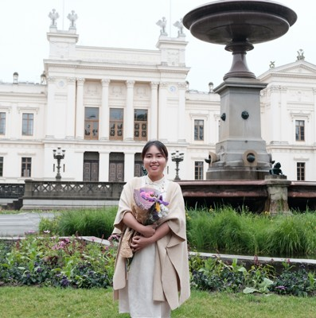
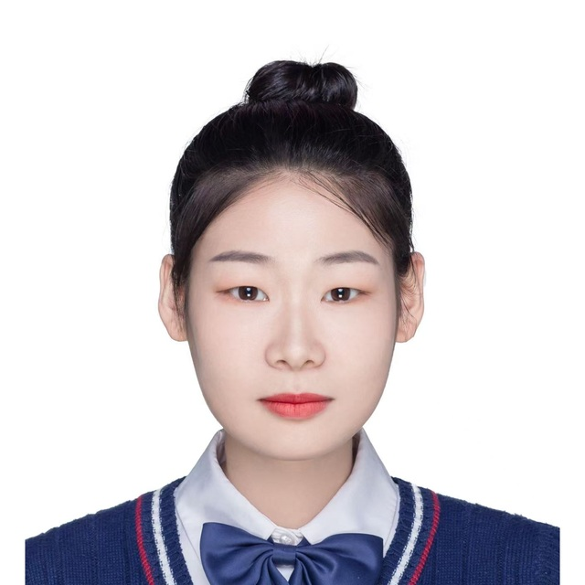
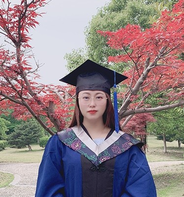
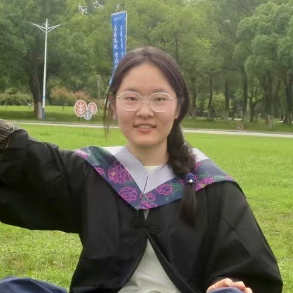
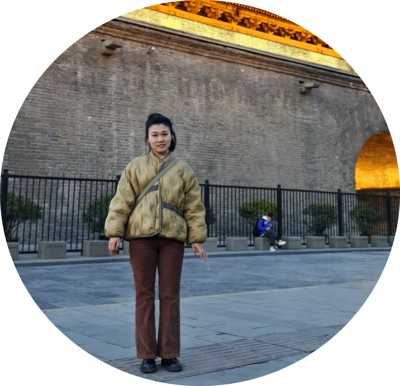
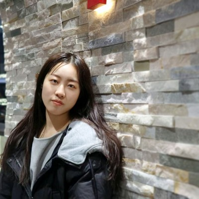

Wei Meicai （魏美才）
教授 Lab Leader
江西师范大学 · 生命科学学院
PEOPLE & COLLABORATORS
教授 Lab Leader
江西师范大学 · 生命科学学院
按英文姓名 A–Z 排序
教授 国际合作者
Western University · Department of Biology · 加拿大
教授
江西师范大学 · 数学与统计学院
副教授
江西师范大学 · 生命科学学院
教授 国际合作者
The University of Texas at Austin · Department of Integrative Biology · 美国
教授
江西师范大学 · 人工智能学院
显示31位研究参与者
按英文姓名 A–Z 排序
本科生 已毕业
松叶蜂科系统发育与线粒体基因组
优秀毕业生
香港科技大学 · 博士在读
硕士生 已毕业
锤角叶蜂基因组组织与整合分类
硕士生 已毕业
长RNA二级结构预测算法开发
重庆大学 · 博士在读
硕士生 已毕业
合作团队成员
NCBI2GO与MitoOmicsDB
南昌航空大学软件学院 · 辅导员
本科生 已毕业
昆虫系统发育基因组学、蜉蝣目DNA分类与系统学、分子标记设计与开发
优秀毕业论文
南京师范大学 · 师资博士后（2025.07至今）
本科生 已毕业
茎蜂与叶蜂线粒体基因组比较
优秀毕业论文
优秀毕业生
本科生 已毕业
棒蜂科线粒体基因组比较研究

硕士生 已毕业
合作团队成员
脊椎动物线粒体12S rRNA结构比较
南昌职业大学数智学院 · 教师

本科生 已毕业
演化生物学

硕士生 · 博士生 在读
江西师范大学 · 博士在读

硕士生 已毕业
膜翅目线粒体16S rRNA结构比较

本科生 已毕业
昆虫12S结构预测及长度分析
优秀毕业论文
本科生 已毕业
叶蜂属级关系与线粒体数据
高中教师
本科生 已毕业
Siobla线粒体基因组与系统位置
优秀毕业论文
优秀毕业生
本科生 已毕业
缨翅目线粒体基因组重排量化
沈阳药科大学 · 研究生
硕士生 已毕业
Taxoblenus线粒体基因组与系统发育
博士生 在读
江西师范大学 · 博士在读
硕士生 参与中
合作团队成员
数据分析
参与时间 · 2024至今
江西师范大学 · 数学与统计学院
导师 · 邓文丽教授

博士生 在读
叶蜂分类与基因组组织
江西师范大学 · 博士在读
硕士生 已毕业
樱实叶蜂物种界定与系统发育
优秀毕业生
本科生 已毕业
基因组记录校核与叶蜂系统分类
优秀毕业生
本科生 已毕业
昆虫12S二级结构预测方法初探
优秀毕业论文
帆礼生物 · 医药研发
硕士生 已毕业
两栖动物线粒体基因组组织
优秀毕业论文
硕士生 已毕业
Taxonus线粒体基因组与系统发育
博士生 已毕业
硕士生 已毕业
合作团队成员
辅导员
硕士生 已毕业

本科生 已毕业
整合分类、系统发育与生物地理
优秀毕业论文
南开大学 · 博士在读
硕士生 已毕业
硕士生 已毕业
刺胞动物线粒体小亚基rRNA结构
硕士生 在读
海绵线粒体小亚基rRNA结构比较
江西师范大学 · 硕士在读
没有匹配的档案。可清空关键词或切换为“全部”。
SHARED QUESTIONS · COMPLEMENTARY EXPERTISE
围绕共同的问题，连接不同的研究专长。
CROSS-DISCIPLINARY COLLABORATION
参与基因组组织量化、脊椎动物12S rRNA结构比较与线粒体数据资源相关研究。
CROSS-DISCIPLINARY COLLABORATION
围绕研究数据开展分析。
关联项目待补充
INTERNATIONAL COLLABORATION
参与海绵线粒体小亚基rRNA结构多样性的比较研究。
INTERNATIONAL COLLABORATION
参与脊椎动物线粒体12S rRNA二级结构的比较研究。